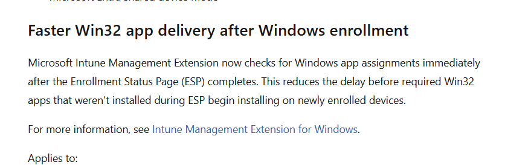
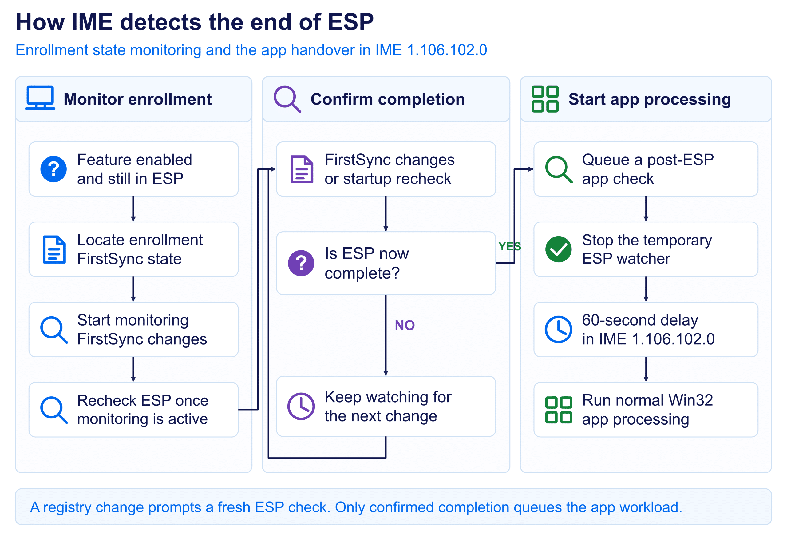
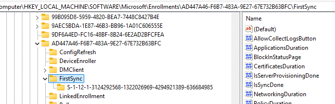
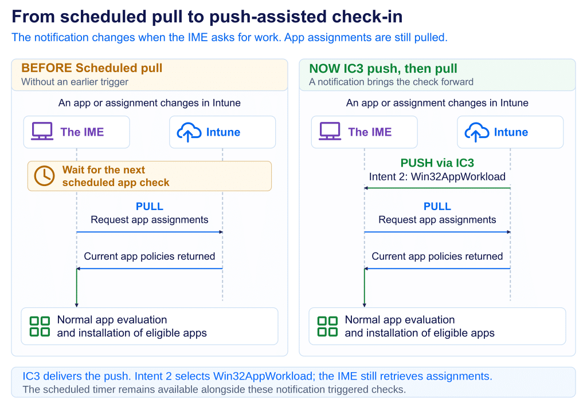

Windows Autopilot can finish while required Win32 apps are still waiting to be installed. This blog explains which apps ESP waits for, why the remaining apps could face a 60-minute delay, and how the IME now picks them up sooner.
The desktop is ready, but the required apps are missing
Autopilot finishes. The Enrollment Status Page (ESP) completes. The user reaches the desktop, but some required Win32 apps haven’t even started installing. Then, about an hour later, those applications suddenly begin to arrive.
That was the frustrating behavior we described in the earlier blog. The blocking apps that you configured in the ESP profile had completed, so Windows let the user continue. The remaining required apps still needed the Microsoft Intune Management Extension, or the IME, to pick them up through normal app processing.
For the user, that distinction does not help much. They have just finished setting up a new device, the desktop looks ready, and the application they need is missing. From their side, setup is done. In the affected deployments, the remaining required apps could sit idle until the next scheduled check (which was up to 60 minutes)
Microsoft has now officially announced the improvement
Microsoft now lists Faster Win32 app delivery after Windows enrollment in What’s new in Microsoft Intune, under service release 2609, week of 28 September 2026. The announcement describes an immediate app assignment check after ESP completes, reducing the delay before remaining required Win32 apps begin installing.


The documentation for the Intune Management Extension describes the improved handover too. To understand why it matters, we first need to return to the timing problem in the original flow. Then we can follow what the IME now does when enrollment finishes.
A recap of the original required app delay
In our earlier blog about the required app delay, we described a specific timing problem. At sign-in, the IME could check for apps while ESP was still active or before the real user session was ready. The available-app pass ran first. When that pass exited early, the required-app check didn’t run immediately.
ESP could then finish and the desktop could appear, while the remaining required apps waited roughly 60 minutes for another check. Restarting the device or the IME retried app processing once enrollment and the user session were ready. The new behavior addresses that missed transition.

Required apps and ESP blocking apps
Adding an app to the ESP blocking list tells ESP to wait until that app has installed successfully before letting the user continue. The app must also be assigned as Required to the user or device.
What happens to the other required apps depends on the Autopilot scenario. During user-driven and self-deploying Autopilot, nonblocking Win32 apps wait until ESP completes, as described in Microsoft’s ESP documentation.
During pre-provisioning, additional required apps can also install in the technician phase. With Only fail selected blocking apps in technician phase set to Yes, Intune attempts all required apps eligible for that phase, but a nonblocking app failure allows provisioning to continue. Setting it to No limits installation attempts during that phase to the blocking apps.
When this blog refers to remaining required apps, it means the apps still awaiting installation when ESP finishes. The new IME behavior triggers an earlier app check, reducing the wait before those apps can begin installing.
What changed in the required apps handover
The change gives the IME a way to react as enrollment progresses. While ESP is still active, the IME can monitor the enrollment state stored beneath FirstSync in the Windows registry. That gives it a signal when the state changes, including the transition we were missing in the earlier flow.
As that state changes, the IME receives a notification and checks the ESP phase again. A registry change is a reason to recheck; it doesn’t automatically mean enrollment has finished. Once the IME confirms that the device has left ESP, it queues another app workload check.


This supplies the missing connection between enrollment finishing and the next app evaluation. Scheduled checks continue to exist, but the end of ESP now provides an additional reason to run the app workload sooner.
The detailed sequence below describes the IME 1.106.102.0 build. Its timing includes a 60-second delay before the queued app workload is invoked. Microsoft’s “immediate” description therefore means an early completion-triggered check here; it is not a promise that every app starts or finishes installing at the instant the desktop appears.
How the IME follows enrollment step by step

Step 1: Watch the state that changes during enrollment
The first part starts while the IME still sees the device in ESP. If the feature is enabled through its service-delivered configuration, the IME looks below the local machine enrollment registry location for an entry containing a FirstSync subtree. It then watches for value changes beneath that location, including its child keys.


Windows updates those values as enrollment progresses. The watcher gives the IME a notification when something changes, so it has a reason to look at the ESP phase again. If monitoring is already active, the existing watcher stays in place. Another app workload run does not create a second watcher.
Step 2: Cover the moment when monitoring starts
The IME also accounts for a small timing gap when monitoring starts. The IME can check the ESP, find that it is active, and then start its watcher just as Windows finishes enrollment. If it simply waited for the next registry change, that final transition might already have happened.
To cover that gap, the IME checks the ESP phase once more immediately after monitoring starts. If the ESP has already finished, it proceeds through the completion path without needing a later notification. Otherwise, the watcher remains ready for the next change. That closes the gap between deciding to monitor enrollment and actually receiving its updates.
Step 3: Confirm what the registry change means
A FirstSync notification only tells the IME that something changed. Enrollment can update several values while setup is still in progress, so treating every notification as completion would start the handover too early again. The IME therefore checks the ESP phase after receiving the notification.
If the device is still in ESP, monitoring continues. When the phase check says the device is no longer in ESP, the IME can move forward. This separates the signal from the decision: the registry change gets its attention, and the ESP check determines whether enrollment has actually ended.
How completion becomes another app check
Step 4: Queue the handover and remove the watcher
Once completion is confirmed, the IME queues a background app check with a reason identifying it as after Autopilot. This gives the app workload another attempt after enrollment. The completion path invokes the normal workload directly; it does not first launch a separate available-app check and wait for that pass to succeed.
The IME then stops the temporary watcher and removes its safety timer. Its job was to catch the transition out of ESP, and that handover has now been queued. A watcher left running also has a 24-hour cleanup timeout. That timeout removes the watcher; it does not hold apps for a day or schedule an installation.
Step 5: Run the queued check after a short delay
A useful timing detail: In the IME 1.106.102.0 build, the queued task waits 60 seconds before invoking the app workload. The completion message describes an immediate check-in, but the workload invocation follows that delay. The watcher can therefore stop before the next app check appears in the logs.
In practice, this attempt is tied to ESP completion. The device can process its apps early without depending on the old one-hour wait. Sixty seconds is the delay before the attempt in this build, not a guarantee that an app will be installed one minute after setup.
Step 6: Continue through the normal app delivery process
From this point, the IME still has its usual work to do. It obtains the user and device context, retrieves assignments, checks detection and applicability, and processes the required apps that are eligible and due. Dependencies, content download, and the installer still take time. Existing workload coordination and throttling also still apply.
That is the user-visible benefit of the change: remaining apps get a useful evaluation sooner. It does not make an inapplicable app applicable or turn a failed installer into a success. If the check runs promptly but an app is still missing, the next question is where that particular app stopped.
Following the same sequence in the logs
The IME logs let you connect the monitoring start, ESP reassessment, completion trigger, and later app workload. Follow the same app ID into evaluation and installation, and use Windows enrollment events for context. A nearby installation timestamp alone does not prove which action triggered the check, especially if someone also restarted the service or initiated a sync.
Putting the old and new flows together
Previously, an app check could run before enrollment, and the user session was ready. If that attempt exited early, the desktop could appear while the remaining required apps waited for the later scheduled check. The updated flow gives the IME another attempt tied to confirmed ESP completion.

Faster Win32 app delivery does not stop at Autopilot
This ESP completion change solves one specific timing gap after Autopilot. Microsoft has also announced a broader Faster Win32 app delivery improvement for normal Win32 app changes. Intune can now use push notifications when an administrator or the service changes a Win32 app, giving the IME a reason to check for app work sooner instead of waiting for its normal polling interval. In my testing, that push reached the IME through IC3, with intent 2 selecting Win32AppWorkload, after which the normal app check retrieved the current assignments. So these are two different triggers solving a similar problem: after Autopilot, ESP completion can start another app check; outside that flow, an app change can push the IME to check sooner.


Read the full deep dive:Faster Win32 app delivery in Intune: from pull to push
A better first experience for the user
That can make a substantial difference on a newly enrolled device. The user reaches the desktop, and the remaining eligible apps can start moving through installation much sooner, reducing the unexplained idle period and the need to restart the IME or sign out simply to prompt another attempt.
Apps still need time to download and install. Anything that must be present before desktop access should remain part of the ESP blocking requirements. For the remaining required apps, this change connects the end of setup to the next useful app check and makes the handover much smoother.
Microsoft rolls out Intune updates in phases. Verify the completion-triggered check on representative devices before retiring an existing workaround. For affected users, the benefit is clear: less waiting after setup, fewer interruptions, and earlier access to the applications they need.